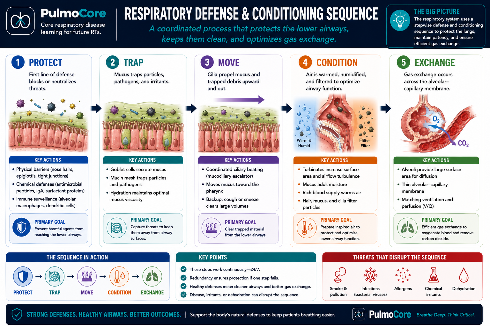
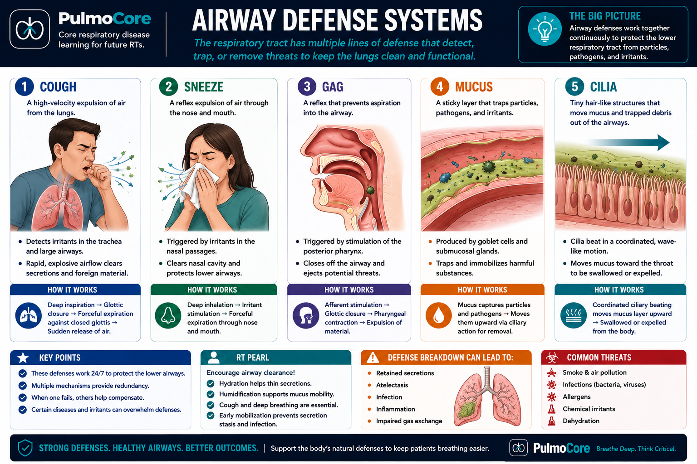
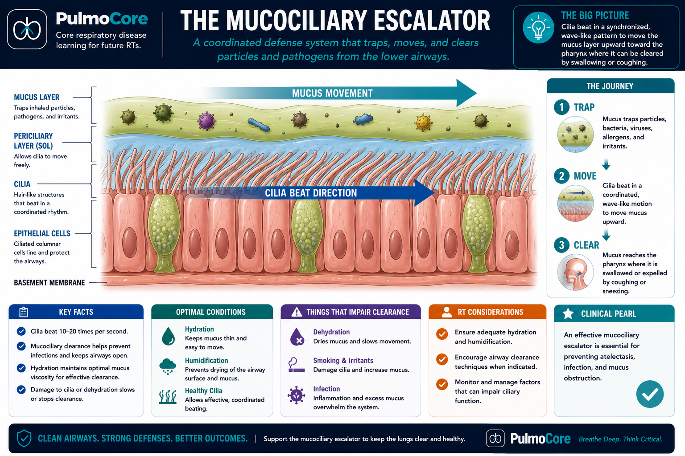
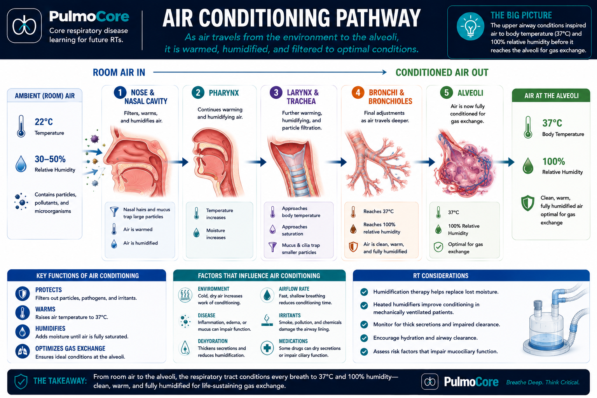
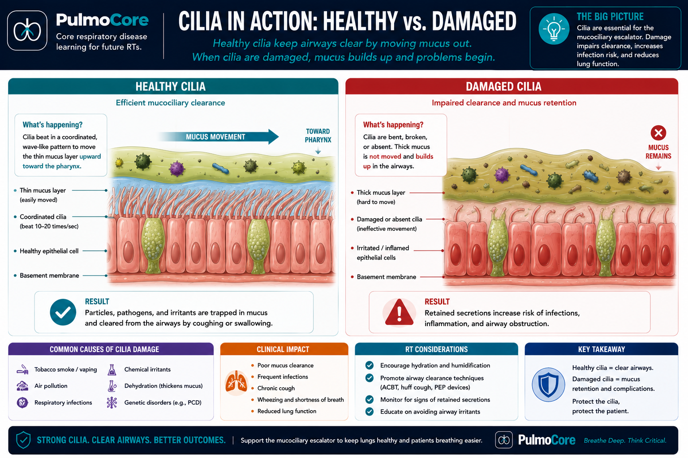

This physiology lesson explains how layered airway defenses filter and condition inspired gas, transport mucus, generate cough flow, and protect the distal lung. Learners trace how failure of one mechanism changes secretion clearance, airway resistance, and respiratory workload.
Course Respiratory Physiology
Estimated Time 30–45 minutes
Level Beginner / No prior medical knowledge assumed
By the end of this lesson, learners should be able to explain airway defense as a connected physiologic system and predict the consequences when one component fails.
1. Explain airway conditioning Connect nasal conchae, mucosal blood flow, water-vapor transfer, and the isothermic saturation boundary to delivery of gas near 37°C and 100% relative humidity.
2. Explain mucociliary transport Describe how mucus composition, airway-surface hydration, and coordinated ciliary motion move trapped material toward the pharynx.
3. Compare regional defenses Differentiate filtration, reflex protection, mucociliary transport, cough clearance, and alveolar macrophage activity by airway location and function.
4. Predict failure consequences Trace how dry gas, airway bypass, ciliary injury, dehydrated mucus, or weak expiratory muscles lead to retention, narrowed airways, and increased work of breathing.
Inspired air is not ready for the respiratory zone when it enters the nose or mouth. A proximal-to-distal defense sequence filters larger particles, traps smaller material in mucus, moves secretions toward the pharynx, expels central-airway material through cough, and uses alveolar macrophages to remove particles that reach the respiratory zone. At the same time, airway tissue transfers heat and water so the gas approaches body temperature and full saturation before reaching the distal lung.

Structure supports function Nasal conchae create turbulence and increase mucosal contact, improving filtration, heat transfer, and water-vapor transfer.
Location matters Conducting airways rely on mucus, cilia, and cough; alveoli lack the same ciliated transport system and depend more on macrophage phagocytosis.
Failure becomes mechanical Retained secretions reduce effective airway radius, sharply increase resistance, and promote ventilation maldistribution and greater work of breathing.
Quick Pre-Check
Start with the big idea
Which statement best explains why airway defense is important?
The Body's Airway Defense System
The respiratory system uses layered defenses at different anatomic levels. Nasal hairs, conchae, and turbulent flow support proximal filtration. Sneezing clears nasal irritants, gag and glottic closure reduce aspiration risk at the pharynx, mucus traps particles in the conducting airways, and cilia transport the mucus toward the pharynx.
Cough clears central airways An effective cough requires a deep inspiration, glottic closure, expiratory-muscle contraction that raises intrathoracic pressure, and sudden glottic opening that creates high expiratory flow.
Macrophages protect alveoli Particles that reach the respiratory zone are engulfed by resident alveolar macrophages. The mucociliary escalator does not extend across alveolar surfaces.
Defenses are complementary Cilia move peripheral conducting-airway secretions toward larger airways; cough supplies the high flow needed for final expulsion from central airways.
Common misconception An audible cough is not necessarily effective. Weak inspiratory or expiratory muscles can prevent adequate volume, pressure, and flow.

Practice: Which actions help remove foreign material?
Select all that apply, then check your answers.
Complete the defense check to continue.
Match the Defense to Its Purpose
Choose the best purpose for each defense.
Cough
Sneeze
Mucus
Cilia
Complete the matching activity to continue.
The Mucociliary Escalator
The mucociliary escalator is a coordinated transport system. The mucus layer traps particles and microorganisms, while cilia beat within a properly hydrated periciliary layer and propel the overlying mucus toward the pharynx. Clearance therefore depends on both functional cilia and mucus with an appropriate volume, hydration, and viscosity.

Sequence the Mucociliary Escalator
Select the correct order for each step.
1st
2nd
3rd
4th
5th
Complete the sequence activity to continue.
Why RTs Care
Normal cilia cannot effectively move dehydrated, highly viscous mucus, and normally hydrated mucus will not clear when cilia are injured or paralyzed. In either case, secretions accumulate, reduce airway radius, increase resistance and pressure requirements, promote ventilation maldistribution, and increase infection risk and respiratory workload.
Compare the mechanisms: Severe dehydration primarily changes mucus properties; smoking may both increase mucus production and impair ciliary motion. The downstream problem may look similar, but the first failed physiologic step is different.
Humidity and Temperature Conditioning
The upper airway normally transfers heat and water to inspired gas. Nasal conchae increase surface area and turbulence, bringing gas into contact with warm, richly perfused, moist mucosa. At the isothermic saturation boundary, inspired gas has normally reached approximately 37°C and 100% relative humidity. Gas that remains cooler or less saturated continues to draw heat and water from airway tissue.

Practice: What conditions do alveoli need?
Select all that apply.
Complete the humidity check to continue.
Upper-airway bypass: An endotracheal or tracheostomy tube removes much of the normal conditioning surface. Without adequate external humidification, lower-airway water loss increases, the airway-surface layer dehydrates, mucus viscosity rises, ciliary transport slows, and retained secretions increase airflow resistance. Humidification is therefore a defense requirement, not merely a comfort measure.
Cilia Damage and Impaired Clearance
Smoking, inhaled irritants, infection, epithelial injury, dehydration, and temperature extremes can impair clearance by reducing ciliary beat or changing mucus properties. Smoking commonly creates a double burden: more mucus must be transported while damaged cilia are less able to move it.

Dry gas or dehydration Water is lost from the airway-surface liquid and mucus, increasing viscosity and compressing the space in which cilia beat.
Ciliary injury Particles may still be trapped, but coordinated upward transport slows or stops, causing secretion retention.
Weak expiratory muscles Mucus and cilia may be normal, yet central secretions remain because cough pressure and expiratory flow are inadequate.
Distal cellular failure Impaired macrophage activity weakens phagocytic removal of particles and organisms that reach alveoli.
Practice: What can impair mucociliary clearance?
Select all that apply.
Complete the cilia damage check to continue.
Guided Clinical Connection
Tracing an Airway-Defense Failure
This case requires a complete cause-and-effect explanation: identify the first failed mechanism, locate it anatomically, and predict the downstream mechanical consequence.
Stage 1: Initial Finding
A patient with a long smoking history produces thick sputum that is increasingly difficult to clear. Smoking has increased the mucus burden and impaired coordinated ciliary motion.
Question: Which normal airway defense system has failed first?
Stage 2: Why It Matters
Secretions accumulate in the conducting airways. Coarse breath sounds increase, ventilation becomes less evenly distributed, and the patient reports greater work of breathing.
Question: Which physiologic link best explains the increased work of breathing?
Case Wrap-Up
Mechanism chain: Smoking-related ciliary injury plus thicker mucus → slower transport toward the pharynx → secretion retention → reduced airway radius → increased resistance and work of breathing.
Regional check: Cilia transport mucus through conducting airways; cough clears larger central airways; macrophages provide cellular defense in alveoli. One mechanism cannot fully replace the others.
Knowledge Check
Mastery Check
Answer each question correctly to complete the lesson.
Question 1
What is the main purpose of mucus in the airways?
Question 2
What do cilia do in the respiratory tract?
Question 3
What temperature and humidity should inspired gas reach near the alveoli?
Question 4
Which factor can impair mucociliary clearance?
0 / 4 questions answered
FAQ
Common Beginner Questions
Is mucus always bad?
No. Mucus is protective because it traps particles and microbes. It becomes a problem when it is excessive, too thick, infected, or difficult to clear.
Why does the body cough?
Coughing is a protective mechanical sequence. Adequate inspiration supplies volume, glottic closure permits pressure to build, expiratory muscles generate intrathoracic pressure, and sudden glottic opening creates high expiratory flow that shears mucus from larger central airways.
Why do alveoli need humidity?
Gas below body temperature and full saturation draws heat and water from airway mucosa. This dehydrates the airway-surface layer, increases mucus viscosity, slows ciliary transport, and can increase secretion retention and airway resistance.
Why does smoking affect secretion clearance?
Smoking can damage or paralyze cilia and increase mucus production, making it harder for the airway to clear secretions.
Do cilia clear particles from the alveoli?
No. The mucociliary escalator belongs to the ciliated conducting airways. Particles that reach the alveoli are handled primarily by resident alveolar macrophages through phagocytosis.
Can normal cilia compensate for a weak cough?
Only partially. Cilia can transport secretions toward larger airways, but weak inspiratory or expiratory muscles may prevent the high expiratory flow needed to expel central-airway mucus.
Summary & Clinical Pearls
Airway defense is a layered, location-specific system. Nasal structure supports filtration and conditioning; mucus traps material; hydrated cilia transport it toward the pharynx; cough expels central secretions; and alveolar macrophages remove particles that reach the respiratory zone. Failure of any layer should be traced from the first impaired mechanism to retention, resistance, ventilation maldistribution, infection risk, and increased respiratory workload.
Must know: Mucus trapping and ciliary transport are separate but interdependent functions.
Conditioning pearl: At the isothermic saturation boundary, gas is approximately 37°C and 100% relative humidity.
Regional pearl: Cough clears central airways; alveolar macrophages defend the respiratory zone.
Mechanics pearl: Small reductions in airway radius from retained mucus can produce large increases in resistance.
Searchable Glossary
Search key terms before using the mastery flashcard deck.
Glossary Flashcard Mastery Deck
Click the card to flip it. Mark known cards to move them into the completed pile.